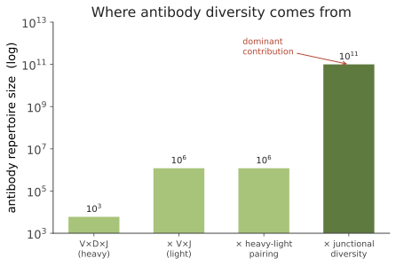

人体 IV · 免疫：分布式识别与记忆
证据地位：【实】——核心机制（V(D)J 重组、克隆选择、免疫记忆）证据极硬，多项获诺贝尔奖。 免疫系统是人体最像信息系统的部分。它要解决一个看似不可能的问题：在事先不知道敌人长什么样的情况下，识别几乎任意的外来分子，同时不攻击自己，并且记住见过的敌人。它的解法是生物学中最优雅的构造之一——在体内运行一个达尔文式的选择过程。
一、问题有多难
病原体的分子空间实际上是无穷的：细菌、病毒不断变异，还会出现从未存在过的新分子。基因组只有约 2 万个基因，不可能为每种可能的抗原预存一个受体基因。
这就是免疫学的核心难题。答案分两层：先天免疫用少量受体识别病原体的保守特征（快速但粗糙）；适应性免疫则现场生成海量随机受体，再由抗原来筛选（慢但精确，且可记忆）。
二、先天免疫：识别"模式"
先天免疫不识别具体病原，而识别病原体相关分子模式（PAMP）——那些微生物有、人类没有、且难以变异丢弃的保守结构：细菌脂多糖、鞭毛蛋白、双链 RNA、未甲基化 CpG DNA。
识别它们的是模式识别受体，最著名的是 Toll 样受体（TLR）（发现史获诺奖）。一旦结合，触发信号级联（NF-κB 等）→ 释放细胞因子 → 招募中性粒细胞、巨噬细胞 → 炎症反应（红、肿、热、痛：血管扩张增加血流、通透性增加让细胞与蛋白渗出）。
还有补体系统（一组血浆蛋白的级联放大，可直接穿孔杀菌并标记靶标）与 NK 细胞（专杀"丢失自我标志"的细胞，如被病毒感染或癌变而下调 MHC I 的细胞）。
先天免疫在数分钟到数小时内起效，处理掉绝大多数入侵，并决定是否启动适应性免疫（通过抗原提呈与共刺激信号）。这一点常被低估：先天免疫不只是第一道防线，它还是适应性免疫的指挥官——它判断"这是否值得动员大部队"。
三、适应性免疫的核心：随机生成 + 选择
V(D)J 重组（Tonegawa，诺奖）是本页最精彩的机制。抗体（与 T 细胞受体）的可变区不是由单一基因编码，而是在每个淋巴细胞发育时，从基因组中的多个片段库里随机各挑一个拼接：

光是组合就有 10⁶ 量级；再加上连接处的随机核苷酸插入与删除（由 TdT 酶引入），多样性跃升至 10¹¹ 以上——用约几百个基因片段，生成了远超基因组容量的受体库。这是一个用组合爆炸对抗无穷的策略。
克隆选择（Burnet，诺奖）：每个淋巴细胞只表达一种受体。抗原进入后，只有受体恰好匹配的少数细胞被激活，随即大量增殖（克隆扩增）并分化。这是体内的达尔文过程：随机产生变异 → 环境（抗原）施加选择 → 适者扩增。
亲和力成熟更把这个类比坐实：在生发中心，B 细胞的抗体基因经历体细胞高频突变（突变率比常规基因高约 10⁶ 倍），突变后与抗原结合更紧的细胞获得更多存活信号，于是在几天内完成一轮微观演化，抗体亲和力可提升百倍以上。免疫应答字面意义上是一次加速的自然选择实验。
四、不攻击自己：耐受的代价
随机生成受体必然产生识别自身的受体。免疫系统靠多重机制清除它们：
- 中枢耐受：T 细胞在胸腺经历双重筛选——阳性选择（必须能弱结合自身 MHC，否则无用而死）与阴性选择（若强结合自身抗原则被清除）。胸腺借助 AIRE 基因表达全身各组织的蛋白用于测试，这是个精巧的设计。约 95% 以上的胸腺细胞在此死亡——巨大的浪费换取安全。
- 外周耐受：调节性 T 细胞（Treg）主动抑制自身反应性细胞；缺乏共刺激信号时淋巴细胞进入无能状态。
这套系统会失败，于是有自身免疫病（1 型糖尿病、类风湿关节炎、多发性硬化、桥本甲状腺炎）。也会过度反应于无害物质，即过敏（IgE 介导）。
这里是本课的一个关键伏笔：为什么演化没能把免疫系统做得更完美？因为它面对的是根本性权衡——识别阈值调高则漏掉病原，调低则攻击自身。没有一个阈值能同时最优，任何设定都在两种错误间取舍（🔗 这在统计上就是敏感性与特异性的权衡，ROC 曲线的生物学版本）。线四会说明，演化只能把这个权衡调到"平均繁殖成功最大"，而不是"个体永不生病"。
五、免疫记忆与疫苗
初次应答慢（约 1–2 周），产生 IgM 为主、亲和力较低。但留下记忆细胞。再次遇到同一抗原时，应答更快（数天）、更强、亲和力更高（IgG 为主）——这就是免疫记忆。
疫苗正是利用这一点：用无害的形式（灭活、减毒、亚单位、mRNA）呈现抗原，在不患病的前提下建立记忆。mRNA 疫苗（Karikó & Weissman，诺奖）的关键突破在于核苷修饰（用假尿苷替代尿苷），避免 mRNA 触发过强的先天免疫反应而被迅速降解——一个漂亮的例子：理解先天免疫的分子细节，直接解锁了一项技术。
群体免疫阈值可以算：若基本再生数为 \(R_0\)，需要免疫的比例约为
麻疹 \(R_0 \approx 12\text{–}18\)，故需 92–95% 的免疫覆盖率——这解释了为什么麻疹对疫苗接种率的下降如此敏感：它的阈值几乎是所有传染病中最高的。
六、免疫与其他系统的接口
- 癌症免疫：免疫系统能识别并清除部分癌变细胞；肿瘤则演化出逃逸机制（如表达 PD-L1 抑制 T 细胞）。免疫检查点抑制剂（诺奖）就是解除这种抑制——它不直接杀癌，而是松开免疫系统的刹车。这也解释了它的副作用本质：刹车松开后，自身免疫反应随之增加。
- 微生物组：免疫系统必须容忍肠道数以万亿计的共生菌，同时防御病原——这是下一页的主题。
- 炎症与慢性病：低度慢性炎症与动脉粥样硬化、代谢综合征、衰老相关（"炎性衰老"），这条线索机制细节仍在争论【争】，但关联证据已相当多。
下一页：人体 V——微生物组。你身上的微生物细胞数与人体细胞数相当。这引出一个认真的问题：作为一个生物学单位，"你"到底指什么？